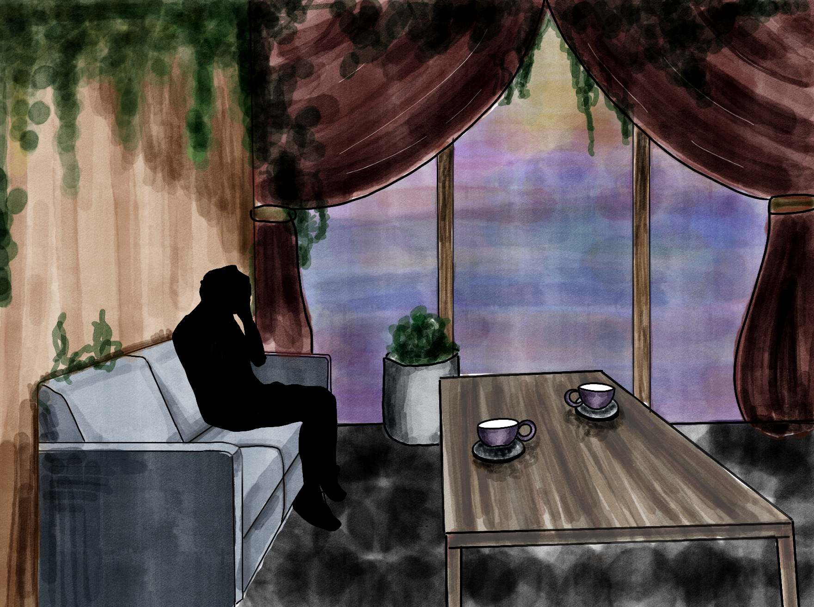
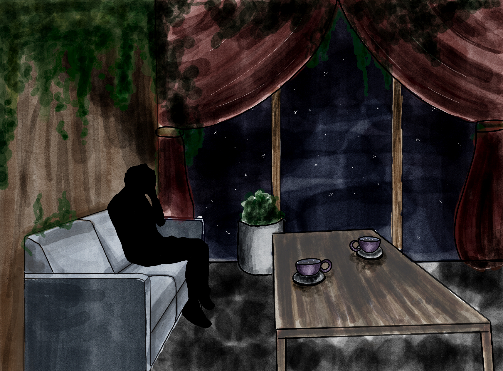
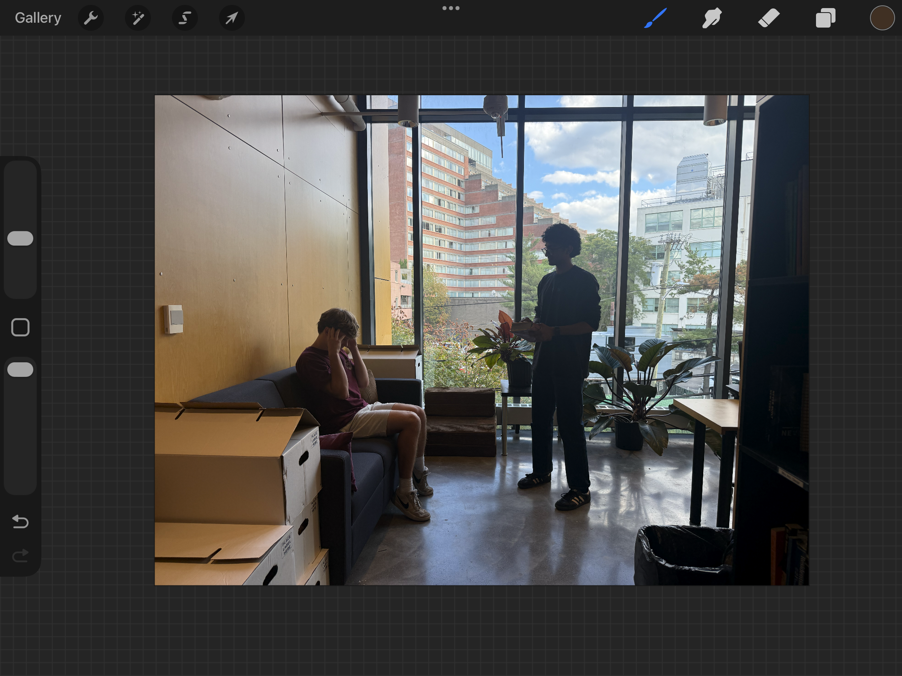
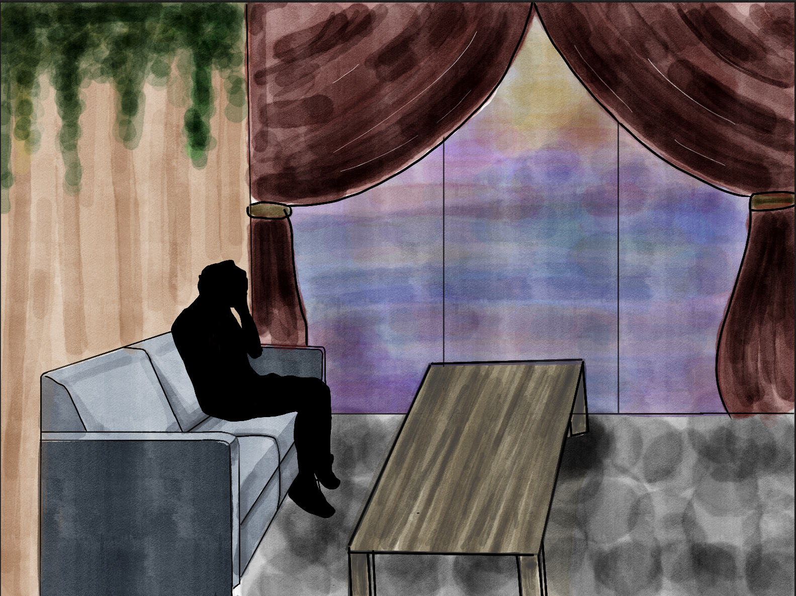
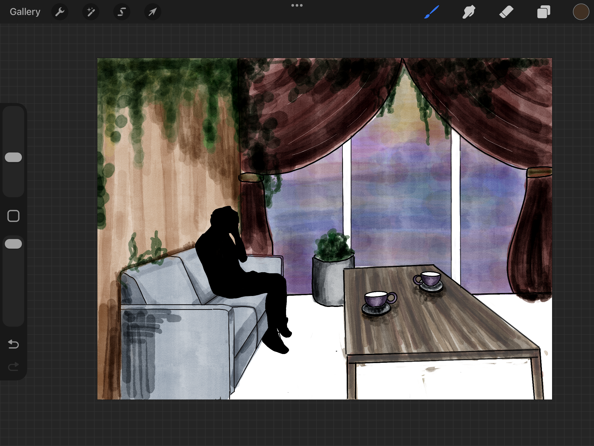

Home Invasion
Design Statement
For my design of Home Invasion, I wanted to create a space that could feel both warm and inviting and unsettling without requiring major changes between scenes. Because I really enjoy drawing, I chose to create my renderings by hand rather than using digital rendering tools. For Holly’s scene, I incorporated a lot of greenery to give the room a warm, slightly bohemian feeling that fits her character and spirituality. At the same time, I liked that the plants could become almost creepy when the room gets darker, especially as they disappear into the shadows. I kept most of the physical set consistent between my two renderings and focused the transformation on the large window. In the normal scene, it suggests an ordinary sunset outside, while in the 4th dimension scene, the same backdrop transforms into a dark, space-like environment. I also worked with my set design teacher to improve the table’s perspective and make the room feel more dimensional.


Process


